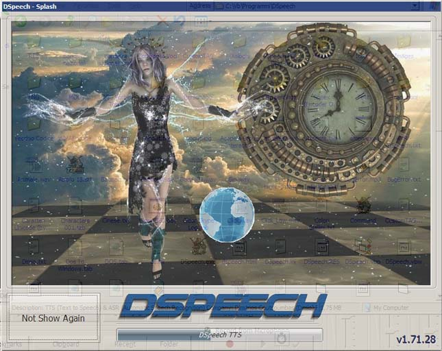
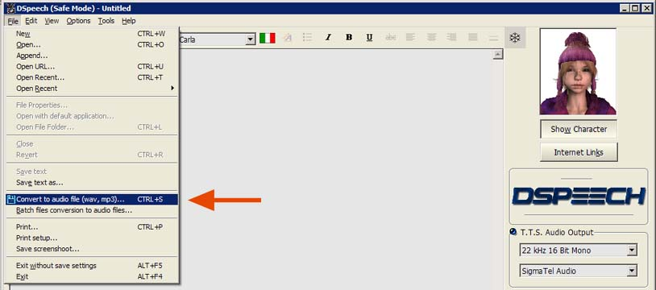
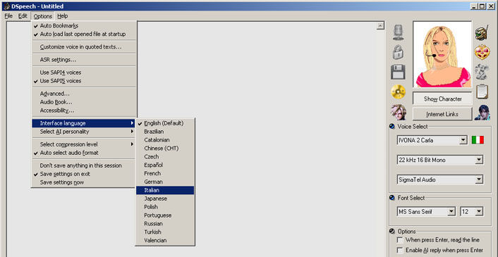
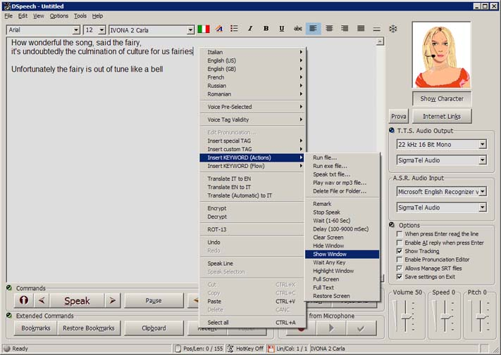

* Didacticiel pas à pas de DSpeech *

|
* TELECHARGEZ QUELQUES VOIX DANS VOTRE LANGUE * Il existe deux types de voix,
SAPI4 (ancien, faible et
bogué) et SAPI5 (moderne et
très bon), alors UTILISEZ UNIQUEMENT
LES VOIX SAPI5, ici quelques liens:
* INSTALLER DES VOIX DANS WINDOWS. * Les voix que vous avez téléchargées doivent être installées sous Windows en tant que programmes standard. Maintenant, dans le menu déroulant de DSpeech, vous pouvez voir toutes les nouvelles voix installées. Si ce n'est pas le cas, essayez de redémarrer le programme. * DÉMARRER DSPEECH * Depuis ce lien, vous pouvez télécharger la dernière version de DSpeech, ce programme est autonome (portable), vous n'avez donc pas besoin de l'installer. Vous devez décompresser le fichier Zip où vous voulez (Bureau) et double-cliquer sur le fichier DSpeech.
* COMMENT SAUVEGARDER EN MP3 * Pour enregistrer tout le texte au format MP3, il vous suffit d'aller dans le menu "Fichier" et de sélectionner "Convertir en fichier audio (wav, mp3) ...", comme indiqué dans l'image ci-dessous..  * COMMENT CONSTRUIRE DES DIALOGUES *
* COMMENT TRADUIRE INTERFACE EN AUTRE LANGUE * Si vous le souhaitez, vous pouvez
traduire l'interface de DSpeech dans une autre langue.
Ainsi, par exemple, si vous sélectionnez le Français, le
bouton "Show Character" sera converti en "Afficher le
caractère".  |
|
* AVANCÉE * DSpeech est un logiciel complet et ce tutoriel n'a montré que les bases, mais si vous voulez explorer d';autres fonctionnalités, vous pouvez commencer par CONTEXT MENU, qui vous permet de créer des dialogues entre différentes voix, d'insérer des pauses, des balises expressives et bien d'autres choses. des exemples de langage de script vous permettant de programmer DSpeech ou d'émuler les fonctionnalités de l'appelant.  |